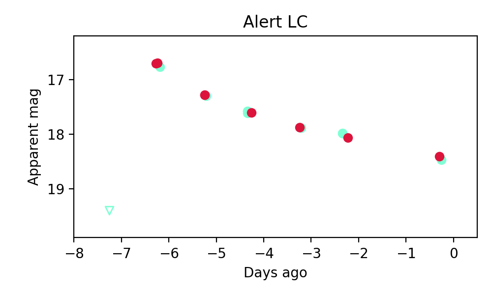

Candidate List 20250614Previous Day Next Day
Section 1: New Sources (age<1d) Section 2: Old (1-5d) sources observed last nightplaceholder
Section 1: New Afterglow/FBOT Cands Last Night (0)
Section 2: Older Sources Observed Last Night (5)
0. ZTF25aauktrd (Afterglow?) [Back to Top] [Share] [Trigger Swift] [Fritz] [Lasair]RA, Dec: 279.10665, 16.47923 18h36m25.60s, 16d28m45.24sGalactic (l, b): 46.09847, 10.6732 ext(g-r) = 0.379


PS1: 0 sources in 3 arcsec
LegacySurvey: 0 sources in 3 arcsec

Extinction-corrected gr color:
From alerts: -0.54 +/- 0.11 mag
Rise Rate:
g: 2.34 mag/day
r: 1.92 mag/day
i: -99 mag/day
Fade Rate:
g: 0.29 mag/day
r: 0.45 mag/day
i: -99 mag/day
1. ZTF25aausgcv (FBOT?) [Back to Top] [Share] [Trigger Swift] [Fritz] [Lasair]RA, Dec: 18.43898, 22.75095 1h13m45.36s, 22d45m3.43sGalactic (l, b): 129.63682, -39.83006 ext(g-r) = 0.042

SDSS (10 arcsec):Found SDSS spec-z: z=0.09; peak abs mag = -19.62
PS1: 0 sources in 3 arcsec
LegacySurvey: 0 sources in 3 arcsec

Rise Rate:
g: -99 mag/day
r: 0.81 mag/day
i: -99 mag/day
Fade Rate:
g: -99 mag/day
r: -99 mag/day
i: -99 mag/day
2. ZTF25aauyjpt (Afterglow?) [Back to Top] [Share] [Trigger Swift] [Fritz] [Lasair]RA, Dec: 306.47307, 25.39368 20h25m53.54s, 25d23m37.24sGalactic (l, b): 66.37382, -7.26815 ext(g-r) = 0.362

PS1: 1 source in 3 arcsec Closest: d = 3.36 arcsec photoz=0.46+/-0.32 peak abs mag = -26.20
LegacySurvey: 0 sources in 3 arcsec

Extinction-corrected gr color:
From alerts: -0.32 +/- 0.03 mag
Rise Rate:
g: 2.47 mag/day
r: 1.29 mag/day
i: -99 mag/day
Fade Rate:
g: 0.57 mag/day
r: 0.58 mag/day
i: -99 mag/day
3. ZTF25aavaabq (Afterglow?) [Back to Top] [Share] [Trigger Swift] [Fritz] [Lasair]RA, Dec: 261.20004, -13.52644 17h24m48.01s, -13d-31m-35.19sGalactic (l, b): 10.56715, 12.28188 ext(g-r) = 0.542
PS1: 0 sources in 3 arcsec
LegacySurvey: 0 sources in 3 arcsec

Extinction-corrected gr color:
From alerts: -0.51 +/- 0.22 mag
Rise Rate:
g: 0.25 mag/day
r: 0.28 mag/day
i: -99 mag/day
Fade Rate:
g: 0.48 mag/day
r: -99 mag/day
i: -99 mag/day
4. ZTF25aavcgfk (FBOT?) [Back to Top] [Share] [Trigger Swift] [Fritz] [Lasair]RA, Dec: 346.68792, 44.73058 23h 6m45.10s, 44d43m50.09sGalactic (l, b): 104.06812, -14.27271 ext(g-r) = 0.247

PS1: 1 source in 3 arcsec Closest: d = 1.24 arcsec photoz=0.11+/-0.03 peak abs mag = -19.95
LegacySurvey: 0 sources in 3 arcsec
Extinction-corrected gr color:
From alerts: -0.17 +/- 0.13 mag
Rise Rate:
g: 0.06 mag/day
r: 0.49 mag/day
i: -99 mag/day
Fade Rate:
g: -99 mag/day
r: -99 mag/day
i: -99 mag/day